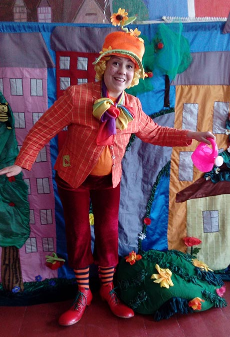

Авторська постановка, яка має на меті звернути увагу дітлахів на питання необхідності добре вчитися. Окремо висвітлюється тема самонавчання, як необхідної складової для досягнення успіху. Режисер - Бачинська Н.М.
Як у Ляни на галявині
Повчально-ігрова постановка для дітей віком до 13 років. Завдяки своїй універсальності може використовуватися як повчальний спектакль-гра з будь-якою тематикою, цікавою як малятам так і дітям більш старшого віку.
Навчання Коськи

Авторська постановка на одну дію для дітей віком від 4 до 12 років, мова українська або російська, тривалість 40-45 хвилин, режисер постановки – Бачинська Н.М. В ході постановки розкриваються такі питання повсякденної життєдіяльності як правила дорожнього руху та пожежна безпека.
Метелиця
Постановка на одну дію по мотивам казки "Морозко". Режисер - Бачинська Н.М.
Зимові пригоди
Веселі та цікаві пригоди казкових персонажів у зимових умовах. Режисер - Бачинська Н. М.
Пригоди мавпи (Чічіта)
Авторська постановка на одну дію для дітей віком від 4 до 12 років, мова українська або російська, тривалість 40-45 хвилин, режисер постановки – Бачинська Н.М. В ході постановки розкриваються такі питання повсякденної життєдіяльності як правила дорожнього руху та пожежна безпека.
Квітка бажань
Авторська постановка на одну дію, що направленна на виховання у дітей почуття гуманності, доброти та співчуття до оточуючих. У ході вистави розкривається суть народної приказки "Не все те золото, що блищить". За мотивами відомої казки "Цветик-семицветик".
Як Іван за розумом ходив
Авторська постановка, яка має на меті звернути увагу дітлахів на питання необхідності добре вчитися. Окремо висвітлюється тема самонавчання, як необхідної складової для досягнення успіху. Режисер - Бачинська Н.М.
Зимова королева
Авторська постанова за мотивами популярної казки. Режисер - Бачинська Н.М.
Перезагрузка
Постановка на два акти по мотивам однойменного твору Д. Лойджа. Тривалість 60-80 хв., вік від 14 років, режисер постановки – Бачинська Н.М. В ході постановки розкриваються питання, що стосуються теми комп’ютерної залежності серед молоді, в простій, доступній формі показані способи протидії негативним наслідкам цього роду залежності.
Це наш дім
Cоціальна постановка по мотивам однойменного твору К. Корсика . Тривалість 70хв., вік від 14 років, режисер постановки - Бачинська Н. М.Постанова, яка розкриває проблему правопорушень серед сучасної молоді, а також показує працю правозахисників з іншого, що відрізняється від повсякденних стереотипів, боку.
Микита Гайдай
Постанова по уривку однойменного твору Т. Г. Шевченка. Найбільш актуальна тема любові до своєї батьківщини і відданості своєму народу. Тривалість 1 год., вік від 14 років. Режисери постановки В. Тарарака, Н. Бачинська.
Життєва наука
Авторська постанова на одну дію в рамках якої освітлюється тема важливості ведення здорового образу життя та необхідності піклування про своє здоров`я.
Віртуальний екзамен
Авторська постановка на тему ілюзорності нашого світосприйняття, яка ще раз доказує просту істину - у нас є плани на життя, у життя є плани на нас.
Рівняння з трьома невідомими
Молодіжна трагікомедія яка показує історію трьох молодих людей, що представляють різні соціальні групи. Знайомство, пошук спільного, компроміс, спроба вирішити проблеми...Як можна подолати прірву соціальної нерівності та чи це можливо взагалі? У ході постановки спробуємо дати відповідь на це актуальне питання. Режисер - Олена Балагура.
Зачароване озеро
Постанова на одну дію для дітей віком від 4 до 10 років, мова українська або російська, тривалість 40-45 хвилин, режисер постановки – Бачинська Н. М. Дана постановка в доступній формі розкриває питання захисту навколишнього середовища, дружби та взаємовиручки.
Пастка для неслухняних
Авторська постановка на одну дію для дітей віком від 3.5 до 10 років, мова українська або російська, тривалість 40-45 хвилин, режисер постановки – Бачинська Н. М. В постановці розкривається тема повсякденної поведінки дитини, в доступній формі дітям пояснюється необхідність слухати старших.
Золота дитина
Постановка по мотивах п’єси В. Орлова «Золоте курча» на одну дію. Для дітей віком від 3.5 до 10 років, мова українська або російська, тривалість 40-45 хвилин, режисер постановки – Бачинська Н.М. Одна із самих популярних та актуальних п’єс дитячих театрів, що розкриває відносини між дітьми та дорослими.
Пригоди Фіксиків
Ігрова розважально-повчальна постановка.
Принцеса Нехочуха
Постановка на одну дію по мотивам чеської казки "Дуже сумна принцеса".
Пригоди привида Еспера
Постанова на одну дію для дітей віком від 3.5 років, мова українська або російська, тривалість 40-45 хв. В постанові розкриваються питання дружби та взаємовиручки, може включати в себе різну тематику.
Іванко
Постанова на одну дію для дітей віком від 3.5 років, мова українська, тривалість 40-45 хв. За мотивами одноіменної казки.
Примхлива принцеса
постанова на одну дію для дітей віком від 4-х років, мова українська або російська, тривалість 40-45 хв., реж. Бачинська Н.М., за мотивами однойменної чеської казки.
Золота вівця
Постанова на одну дію для дітей віком від 4-х років, мова українська або російська, тривалість 40-45 хв., реж. Бачинська Н.М., за мотивами однойменної чеської казки.
Чарівний барабан
Постанова на одну дію для дітей віком від 4-х років, мова українська або російська, тривалість 40-45 хв., реж. Бачинська Н.М., за мотивами народної казки "Каша з сокири".
Принцеса та лісоруб
Весела постановка на одну дію по мотивам народної казки, для різних вікових груп, мова українська або російська, тривалість 40-50 хвилин, режисер постановки - Бачинська Н.М.
Чарівні слова
Авторська тематична постановка на одну дію для дітей віком від 3.5 до 12 років, мова українська або російська, тривалість 40 хвилин. Режисер - Бачинська Н.М. Дітям у доступній формі пояснюється що таке ввічливість.
Скарбниця знань
Авторська тематична постановка на одну дію для дітей віком від 3.5 до 12 років, мова українська або російська, тривалість 45 хвилин. Скарби які завжди з вами.
Улянка
Авторська постановка на одну дiю по мотивах народних казок, для дiтей вiком до 12 рокiв, мова українська або росiйська, тривалiсть 45 хвилин. Казковi пригоди, як в навчанні підмога.
Мішкіни пригоди
Весела авторська постановка, на одну дію для дітей віком від 4 до 12 років, мова українська або російська, тривалість 40хв. Режисер - Бачинська Н.М. Казкові пригоди Міхаїла , та його ведмедиків.
Корисні поради
Авторська постановка на одну дію для дітей віком від 4 до 11 років, мова українська або російська, тривалість 40 хв., реж. Бачинська Н.М. В ході постановки розкриваються питання повсякденної життєдіяльності.
Справжня казка
Постанова на одну дію для дітей віком від 3.5 до 10 років, мова українська або російська, тривалість 40-45хв. Постановка в доступній формі розкриває питання обережного відношення до особистих речей .
Я герой...
Соціальна драма , спроба перенести переживання сучасної молоді з приводу своєї неспроможності на театральні підмостки. Однак не все так однозначно і сучасна молодь - це покоління свого часу. По мотивам твору К.Корсика "Всі мої Я"
Капіталіст
Соціально-сатирична комедія на два акти по мотивам твору І. Карпенко-Карого “Хазяїн”. Тривалість 60-80 хв., вік від 14 років, режисер постановки – Бачинська Н.М. Скупість доведена до абсурду, відсутність культури і нікчемне честолюбство – все це робить будь-яку людину огидною і смішною.
Лабіринт долі
Постановка на одну дiю по мотивам твору С. Мальчика. Режисер постановки - С. Мальчик. Сучасна постановка про взаємовідносини дiтей i батькiв - стара тема актуальна завжди.
Справжні мрійники
Постановка на два акти по мотивам однойменного твору Н. М. Бачинської. Тривалість 60-80 хв., вік від 14 років, режисер постановки – Бачинська Н. М. Усі ми колись мріяли, мріємо і мріятимемо і як добре коли наші мрії збуваються, але ще краще коли вони збуваються саме так, як ми цього бажали.